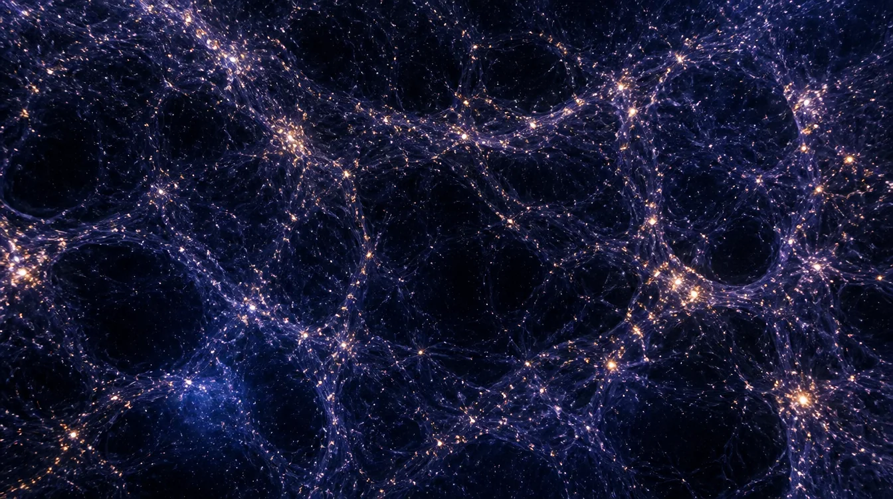

THE QUANTUM FRONTIER
Planck length
1.6 × 10−35 m
Defined length scale
A little wonder
INTERACTIVE EXHIBIT 02 / SPACE & SCALE
Take the long way out: from a length so small our theories strain to describe it, past cells and planets, to the limit of what we can observe.
Start the journeyTHE COSMIC ZOOM
Drag the ruler, tap a stop, or use the arrow keys.


THE QUANTUM FRONTIER
1.6 × 10−35 m
Defined length scale
Read the measurement. Stops mix diameters, radii, distances, and altitudes. The ruler compares lengths, but every card tells you exactly what its number means. The artwork is illustrative, never a literal picture at one common scale.
TRY A THOUGHT EXPERIMENT
Pick any two stops. A logarithmic ruler turns impossible-looking numbers into a comparison you can actually feel.
WHERE DOES IT END?
Each boundary answers a different question. None is a wall you could bump into.
We do not know its total size, or whether it is finite. The cosmic microwave background is the oldest light we can detect directly: it was released when the universe became transparent, about 380,000 years after the Big Bang. That visible-light limit and the observable-universe horizon are related ideas, but they are not a physical shell around everything.
NASA on the observable universe ↗ESA on the oldest light ↗